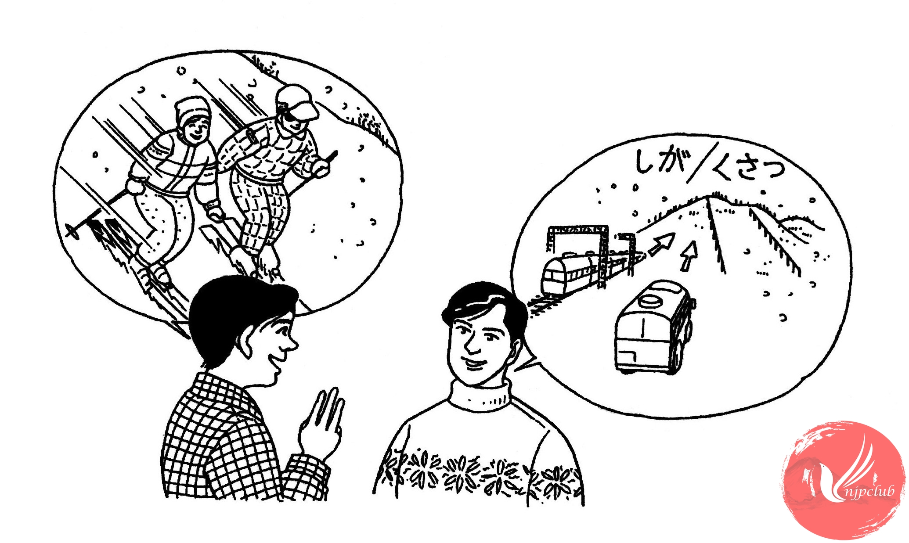

| タワポン： |
鈴木さん、冬休みに 友達と スキーに 行きたいんですが、どこか いい 所、ありませんか。 |
| 鈴 木： |
何日ぐらいの 予定ですか。 |
| タワポン： |
3日ぐらいです。 |
| 鈴 木： |
それなら、草津か 志賀高原が いいと 思いますよ。温泉も あるし･････。 |
| タワポン： |
どうやって 行くんですか。 |
| 鈴 木： |
JRでも 行けますが、夜行バスなら、朝 着きますから、便利ですよ。 |
| タワポン： |
そうですか。どちらが 安いんですか。 |
| 鈴 木： |
さあ･････。旅行社へ 行けば もっと 詳しい ことが わかりますよ。 |
| タワポン： |
それから、スキーの 道具や 服は 何も 持って いないんですが･････。 |
| 鈴 木： |
全部 スキー場で 借りられますよ。 |
|
心配なら、旅行社で 予約も できるし･････。 |
|
| タワポン： |
そうですか。どうも ありがとう ございました。 |